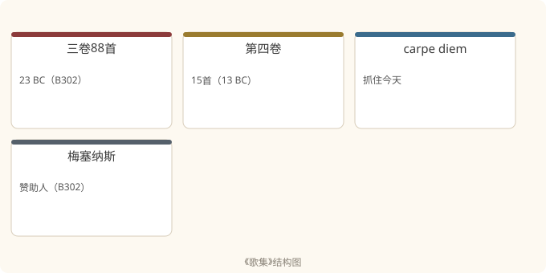

歌集
一、基本信息
| 作者 | 贺拉斯 |
|---|---|
| 成书/出版 | 三卷88首23 BC出版、第四卷15首13 BC（Britannica：published three books, comprising 88 short poems, in 23 bc） Horace — Encyclopaedia Britannica（百科全书） |
| 国别/地区 | 古罗马 |
| 时代 | 古代 · 奥古斯都时代 |
| 体裁 | 抒情诗集 |
| 语言 | 拉丁语 |

《歌集》结构图（主题·结构图）
二、创作背景
Britannica（B302）：'he turned, in the most active period of his poetical life, to the Odes, of which he published three books, comprising 88 short poems, in 23 bc'；第四卷——'a fourth book of 15 Odes, mainly of a more serious (and political) character'。
carpe diem——'pluck the day'或'seize the day'为贺拉斯贯穿主题（B302）。
三、内容脉络
希腊抒情形式的拉丁化：阿尔凯奥斯体、萨福体（通说待核）。
名句：carpe diem（及时行乐/抓住今天）（B302：concept defined as 'pluck the day' or 'seize the day'）。
四、主要人物表
| 人物 | 身份 | 说明 |
|---|---|---|
| 贺拉斯 | 抒情诗人 | 'Augustus' unofficial poet laureate'（B302） |
五、主题与艺术特点
- carpe diem（B302）。
- 友谊、美酒、爱国的颂歌（通说待核）。
- 希腊形式的拉丁移植（B302 语境：adapted Greek lyric forms into Latin）。
六、影响与评论
- Britannica：'a leading Latin lyric poet and satirist of the Augustan Age'（B302）。
Horace — Encyclopaedia Britannica（百科全书） - Britannica：'Augustus unofficial poet laureate'（B302）。
Horace — Encyclopaedia Britannica（百科全书）
七、阅读建议
难点
- 拉丁语阿尔凯奥斯体与萨福体。
- 罗马政治背景（奥古斯都时代）。
- 《贺拉斯诗选》（人民文学出版社，通说待核）。
- 拉丁文原版（公有领域）。
与《诗艺》合读。
八、待核实
- 88首+15首的总数核对。
- carpe diem 原句（1.11）核对。
- 梅塞纳斯赞助（B302 已载）展开核对。